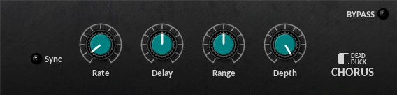
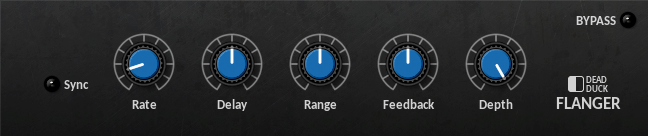
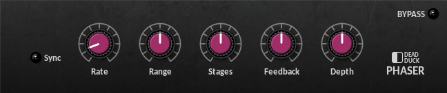
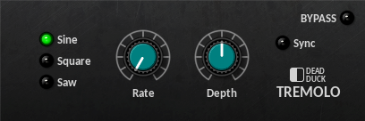
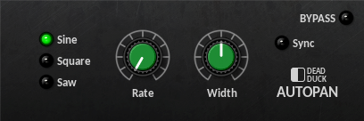
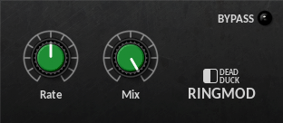

Modulation¶
Chorus¶
A stereo chorus effect with optional tempo-sync.
The following controls are provided:
Sync - switch between frequency (off) and tempo-based timing (on).
Rate - set the modulation rate from 0.01 Hz to 20 kHz or 8/1 to 1/32T according to the Sync setting.
Delay - set the base delay applied to the input signal from 1 ms to 50 ms.
Range - set the amount by which the delay is modulated from 0 to 100%.
Depth - set the dry/wet balance of the output from all dry (0) to all wet (100%).
Flanger¶
A stereo flanger with optional tempo-sync.
The following controls are provided:
Sync - switch between frequency (off) and tempo-based timing (on).
Rate - set the modulation rate from 0.1 Hz to 20 Hz or 8/1 to 1/32T according to the Sync setting.
Delay - set the base delay applied to the input signal from 0.1 ms to 10 ms
Range - set the amount by which the delay is modulated from 0 to 100%.
Feedback - set the amount of feedback from 0 to 100%
Depth - set the dry/wet balance of the output from all dry (0) to all wet (100%).
Phaser¶
A stereo, multi-stage phaser with optional tempo-sync.
The following controls are provided:
Sync - switch between frequency (off) and tempo-based timing (on).
Rate - set the modulation rate from 0.01 Hz to 10 Hz or 8/1 to 1/32T according to the Sync setting.
Range - set the upper limit of the sweep range from 200 Hz to 2 kHz. The lower limit is 100 Hz.
Stages - set the number of stages to 2, 4, 6, 8, 10 or 12.
Feedback - set the amount of feedback applied from 0 to 100%.
Depth - set the dry/wet balance of the output from all dry (0) to all wet (100%).
Tremolo¶
A volume-modulation effect with optional tempo-sync.
The following controls are provided:
Modulation Selector - set the modulation type to sine, sawtooth or square waveforms.
Sync - switch between frequency (off) and tempo-based timing (on).
Rate - set the modulation rate from 0.5 Hz to 20 Hz or 2/1 to 1/32T according to the Sync setting.
Depth - set the amount of modulation applied from -100% to +100%. Negative amounts use an inverted waveform affecting the phase and for the sawtooth wave the shape of the modulation applied.
AutoPan¶
An auto-panning modulation effect with optional tempo-sync and width control.
The following controls are provided:
Modulation Selector - set the modulation type to sine, sawtooth or square waveforms.
Sync - switch between frequency (off) and tempo-based timing (on).
Rate - set the modulation rate from 0.1 Hz to 10 Hz or 8/1 to 1/8 according to the Sync setting.
Depth - set the amount of modulation applied from -100% to +100%. Negative amounts use an inverted waveform to apply the panning in an opposing direction.
RingMod¶
A ring-modulation effect.
The following controls are provided:
Rate - set the frequency of the amplitude modulation applied to the input from 2 Hz to 2 kHz.
Mix - set the dry/wet balance of the output from all dry (0) to all wet (100%).